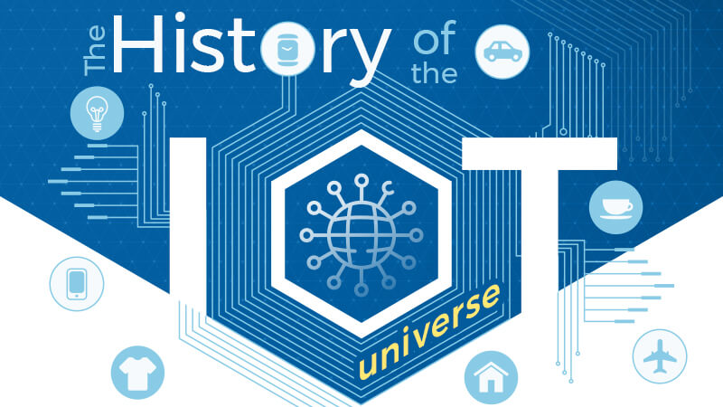
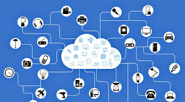

History of Internet Of Things:
The main concept of a network of smart devices was discussed as early as 1982, with a modified Coca-Cola vending machine at Carnegie Mellon University becoming the first ARPANET-connected appliance, able to report its inventory and whether newly loaded drinks were cold or not.Mark Weiser's 1991 paper on ubiquitous computing, "The Computer of the 21st Century", as well as academic venues such as UbiComp and PerCom produced the contemporary vision of the IOT. In 1994, Reza Raji described the concept in IEEE Spectrum as "[moving] small packets of data to a large set of nodes, so as to integrate and automate everything from home appliances to entire factories".Between 1993 and 1997, several companies proposed solutions like Microsoft's at Work or Novell's NEST. The field gained momentum when Bill Joy envisioned device-to-device communication as a part of his "Six Webs" framework, presented at the World Economic Forum at Davos in 1999. The concept of the "Internet of Things" and the term itself, first appeared in a speech by Peter T. Lewis, to the Congressional Black Caucus Foundation 15th Annual Legislative Weekend in Washington, D.C, published in September 1985. According to Lewis, "The Internet of Things, or IoT, is the integration of people, processes and technology with connectable devices and sensors to enable remote monitoring, status, manipulation and evaluation of trends of such devices." The term "Internet of things" was coined independently by Kevin Ashton of Procter & Gamble, later MIT's Auto-ID Center, in 1999, though he prefers the phrase "Internet for things". At that point, he viewed radio-frequency identification (RFID) as essential to the Internet of things, which would allow computers to manage all individual things.The main theme of the Internet of Things is to embed short-range mobile transceivers in various gadgets and daily necessities to enable new forms of communication between people and things, and between things themselves. Defining the Internet of things as "simply the point in time when more 'things or objects' were connected to the Internet than people", Cisco Systems estimated that the IoT was "born" between 2008 and 2009, with the things/people ratio growing from 0.08 in 2003 to 1.84 in 2010

